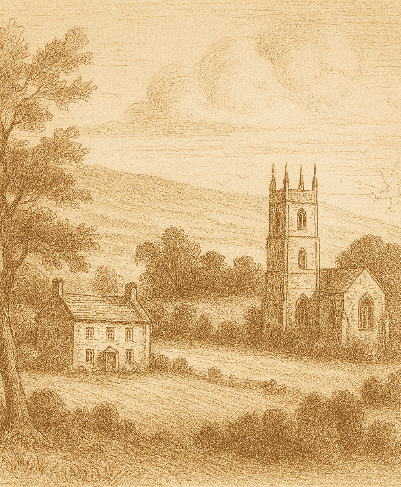
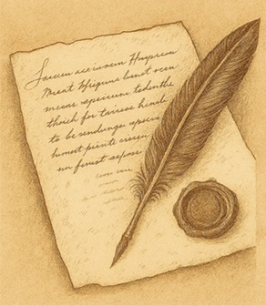

Welcome to Holt Ancestry
Welcome to Holt Ancestry, a research resource dedicated to exploring the history, origins, and legacy of the Holt families of Lancashire. This ongoing project extends far beyond the county, tracing the families as they migrated across England and around world.


The Origin of the Holt name
The topographic name of HOLT means dweller by a wood or copse, a small area of
undergrowth and small trees grown for periodical cutting. This old
English term Holt, a wood or a grove, was often preceded with de or del. The
Holt name first appeared in 1185 in Kent in the Templars Records with
the name of Hugo de Holte. There are many different spellings of the
name Holte, Hoult, Holtzer, Holts, Hoults .. as church officials recorded and
spelled the name as it sounded.
The surname of Holt is one of the oldest Anglo Saxon surnames on record.
The name Holt, seated in Lancashire, appears there from ancient times
and possibly before the Norman Conquest and the arrival of Duke William
at Hastings in 1066 A.D.
The Holt name appears in manuscripts and ancient documents such as
the Doomsday Book (the great survey of England), the Ragman Rolls (historical records of homage),
The Pipe Rolls and Curia Regis Rolls (early judicial and exchequer records),
the Hearth Rolls (early tax records based on the number of chimneys in a home),
and parish registers.
The Saxon gave rise to many English surnames not least of
which was the Holt surname. The collaspe of Roman Britian drew
migrants from across the channel and the arrival of Anglo Saxon settlers
caused social and political unrest mainly in the south and east of Britian.
The Saxons gradually relocated to the north and west, and during the next four hundred years
forced the Ancient Britons back into Wales and Cornwall in the west and
Cumberland to the north. Under Saxon rule England prospered under a series of High Kings, the
last of which was Harold. In 1066, the Norman invasion from France
occurred and their victory at the battle of Hastings. Subsequently, many
of the vanquished Saxon land owners forfeited their land to Duke William
and his invading Norman rule, and many moved northward to the midlands,
Lancashire and Yorkshire
away from the Norman oppression.
During the middle ages the surname Holt flourished and played an
important role in local affairs and in the political development of
England between the 15th and 18th centuries. England was
ravaged by plagues and religious conflict. Puritanism found
political favour with Cromwellianism and the remnants of the Roman
church rejected all non-believers. The conflicts between church groups, the crown and political groups all
claimed their followers and their impositions, tithes, and demands on
rich and poor alike broke the spirit of men and many turned away from
religion. Many families were freely "encouraged" to migrate to Ireland,
or to the "colonies". Some were rewarded with grants of land, others
were banished.
This notable English family name, Holt, emerged as an influential
name in the country of Lancashire where the Holts were recorded as a family
of great antiquity seated with manor and estates in that shire. This
ancient Lancastrian name was first recorded about 1190 in Lancashire
when Hugo Holte was lord of the manor and estates. The Holt surname can
be found in many places, but this site is mainly lookingdistribution
at the
of the name in Lancashire, England.
By the 13th Century the Holts
held many halls and lands, the principal families located at Castleton Hall;
Stubley Hall; Bispham Hall; Shevington
and Ince; and other branches at Ashworth Hall; Grizlehurst Hall; Bridge Hall;
Stubbylee Hall; Little Mitton Hall and Balderstone Hall. The family history and
genealogy is most intriguing. The Holt name in
the parish of Rochdale has been associated with wealth and dignity.
Prominent Families
There appears to have been two prominent families with
the name of HOLT in England.
The Holtes of Aston in Warwickshire, whose estates were situated near
Birmingham. An Aristocratic family. Sir Charles Holte, a personal friend of King Charles I,
who built the mansion known as Aston Hall, where he entertained
the king after the disasterous battle of Edge Hill. Sir Thomas Holte was 12x great grandson of King Edward I of England.
A distinct branch not connected to the Holts of Stubley and Grizlehurst.
The Holts of Stubley and Grizlehurst family, of Lancaster. Both prominent Lancashire Gentry familes who
were prominent local landowners and several were in local offices such as High Sherrif of Lancashire
and Justice's of the peace.
The Holts of Gristlehurst (sometimes spelled Grizlehurst) are a cadet branch (a junior line) descending
from the Holts of Stubley. The most notable person
was Sir John Holt, Lord Chief Justice of the King's Bench. His seat was at Redgrave Park in Suffolk.
Sir John Holt was the renowned Lord Chief Justice of the
King's Bench, known for his integrity and landmark legal rulings that helped shape modern English law. Sir John Holt is
widely regarded by historians as one of the most influential figures in bringing thr era of English witch trails to a close.
Another polarizing figure in the counter reformation was Jesuit William Holt from the Holts of Ashworth line, a cadet
branch of the Holts of Stubley. The Holt's were Lancashire
Gentry in the parish of Rochdale for centuries.
A family offshot including James Maden Holt, was a promenent 19th century english conservative
politcian, philanthropist and landowner in Bacup.
Beyond the manor houses, the Holt legacy was forged in the heat of the
Industrial Revolution with merchants and shipping industry. The Holts in the industrial and
commercial arenas became synonymous with the
brewing and textile industries in Manchester and beyond.
The Liverpool Shipping Dynasty (Sefton Park) family members ran the Blue Funnel Line which was founded
by Alfred Holt, while his brother George Holt was a partner in the Lamport & Holt
line and owner of Sudley House. Another family member Sir Richard Durning Holt
served as an MP and was created the 1st Baronet of Liverpool.
Joseph Holt Brewery was founded by Joseph Holt, his son Sir Edward Holt (1st Baronet of Cheetham) became
a prominent industrialist, philanthropist and civil leader.
Holt Town Mills established by David "Quaker" Holt, this was a rare
example of a "factory colony" in Manchester (then known as Cottonopolis) at the begining of the industrial revolution.
The Rochdale Society of Equitable Pioneers created a huge social impact on people with the
foundation of the modern Co-operative movement. A group of 28 working class men opened a store on Toad Lane on 21 December 1844.
Several men named Holt were among the 28 pioneers. A John Holt was the Treasurer and Abraham Holt, a weaver.
Maritime and Merchant Branches while distinct from the landed gentry of Aston or Stubley, these branches were instrumental
in Britain's maritime and commercial expansion.
The Holts of Whitby were a long-standing line of mariners and shipowners based in
the historic port of Whitby. They operated as part of the specialized
maritime community on the Yorkshire coast.
John Holt of Liverpool (John Holt & Co.) became one of the most significant
shipping and trading companies in the region, focusing on the export of palm
oil and the import of manufactured goods. This line represents the shift from
inherited status to the "self-made" merchant class of the Victorian era.
Whether driven by religious conviction, economic pressure, or the spirit of adventure,
the Holts eventually migrated from their Lancashire heartlands to the far reaches of
Ireland and the American Colonies. This site is dedicated to preserving their
stories from the Great Halls of Rochdale to the merchant docks of the
Mersey and helping share the discovery of these remarkable families.